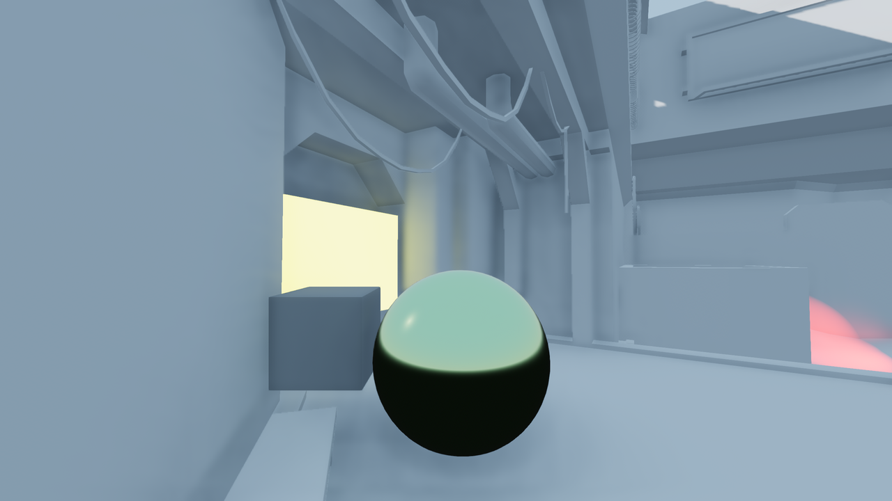

Giới thiệu về chiếu sáng toàn cục
Chiếu sáng toàn cục là gì?
Chiếu sáng toàn cục (global illumination) là thuật ngữ chung dùng để mô tả một hệ thống chiếu sáng sử dụng cả ánh sáng trực tiếp (ánh sáng đến thẳng từ nguồn sáng) lẫn ánh sáng gián tiếp (ánh sáng dội lại từ một bề mặt). Trong một engine kết xuất 3D, chiếu sáng toàn cục là một trong những yếu tố quan trọng nhất để đạt được ánh sáng chân thực. Chiếu sáng toàn cục nhằm mô phỏng cách ánh sáng hoạt động ngoài đời thực, chẳng hạn như ánh sáng dội trên các bề mặt và ánh sáng phát ra từ các material phát sáng.
Trong ví dụ dưới đây, toàn bộ scene được chiếu sáng bởi một material phát sáng (hình vuông trắng ở phía trên). Tường và trần màu trắng ở phía sau bị nhuộm đỏ và xanh lục ở gần các bức tường, vì ánh sáng dội trên các bức tường có màu được phản xạ trở lại phần còn lại của scene.

Chiếu sáng toàn cục bao gồm một số khái niệm chính:
Ánh sáng khuếch tán gián tiếp
Đây là loại ánh sáng không thay đổi theo góc của camera. Có hai nguồn chính của ánh sáng khuếch tán gián tiếp:
Ánh sáng dội trên các bề mặt. Ánh sáng dội này được nhân với màu albedo của material. Sau đó, ánh sáng dội có thể được các bề mặt khác phản xạ tiếp, với tác động giảm dần do suy hao ánh sáng. Ngoài đời thực, ánh sáng dội vô số lần. Tuy nhiên, vì lý do hiệu năng, điều này không thể mô phỏng trong game engine. Thay vào đó, số lần dội thường giới hạn ở 1 hoặc 2 (hoặc tối đa 16 khi bake lightmap). Số lần dội lớn hơn sẽ cho sự suy giảm ánh sáng chân thực hơn ở vùng bị che bóng, đổi lại hiệu năng thấp hơn hoặc thời gian bake lâu hơn.
Các material phát sáng cũng có thể phát ra ánh sáng dội được trên các bề mặt. Điều này hoạt động như một dạng chiếu sáng vùng (area lighting). Thay vì có một điểm nhỏ vô hạn phát sáng bằng node OmniLight3D hoặc SpotLight3D, một vùng có kích thước xác định sẽ phát sáng bằng chính bề mặt của nó.
Ánh sáng khuếch tán trực tiếp đã được chính các node đèn xử lý, nghĩa là các thuật toán chiếu sáng toàn cục chỉ cố gắng biểu diễn ánh sáng gián tiếp.
Các kỹ thuật chiếu sáng toàn cục khác nhau có mức độ chính xác khác nhau khi biểu diễn ánh sáng khuếch tán gián tiếp. Xem bảng so sánh ở cuối trang này để biết thêm thông tin.
Để có che khuất môi trường chính xác hơn cho các đối tượng nhỏ, có thể bật che khuất môi trường không gian màn hình (SSAO) trong cài đặt environment. SSAO có chi phí hiệu năng đáng kể, vì vậy hãy nhớ tắt nó khi nhắm tới phần cứng cấu hình thấp.
Ghi chú
Ánh sáng khuếch tán gián tiếp có thể là nguồn gây ra hiện tượng color banding trong các scene không có texture chi tiết. Điều này khiến dải chuyển sáng không mượt mà, thay vào đó có hiệu ứng "bậc thang" nhìn thấy rõ. Xem mục Hiện tượng phân dải màu (color banding) trong tài liệu về giới hạn kết xuất 3D để biết cách giảm hiệu ứng này.
Ánh sáng phản xạ gương (specular)
Ánh sáng specular còn được gọi là phản chiếu (reflections). Đây là loại ánh sáng thay đổi cường độ theo góc của camera. Ánh sáng specular này có thể là trực tiếp hoặc gián tiếp.
Hầu hết các kỹ thuật chiếu sáng toàn cục đều có cách kết xuất ánh sáng specular. Tuy nhiên, mức độ chính xác khi kết xuất ánh sáng specular khác nhau rất nhiều giữa các kỹ thuật. Xem bảng so sánh ở cuối trang này để biết thêm thông tin.
Để có phản chiếu chính xác hơn cho các đối tượng nhỏ, có thể bật phản chiếu không gian màn hình (SSR) trong cài đặt environment. SSR có chi phí hiệu năng đáng kể (thậm chí còn hơn SSAO), vì vậy hãy nhớ tắt nó khi nhắm tới phần cứng cấu hình thấp.
Nên dùng kỹ thuật chiếu sáng toàn cục nào?
Khi chọn một kỹ thuật chiếu sáng toàn cục (GI) để dùng, có một số tiêu chí cần lưu ý:
Hiệu năng. Các kỹ thuật GI thời gian thực thường tốn kém hơn so với các kỹ thuật bán thời gian thực hoặc baked. Lưu ý rằng phần lớn chi phí kết xuất GI nằm ở GPU chứ không phải CPU.
Hình ảnh. Không chỉ có hiệu năng không tốt nhất, các kỹ thuật GI thời gian thực thường cũng không cho chất lượng hình ảnh tốt nhất. Điều này đặc biệt đúng trong scene phần lớn tĩnh, nơi tính động của GI thời gian thực khó nhận thấy. Nếu mục tiêu của bạn là tối đa hóa chất lượng hình ảnh, các kỹ thuật baked thường trông đẹp hơn và ít rò rỉ ánh sáng hơn.
Khả năng thời gian thực. Một số kỹ thuật GI hoàn toàn theo thời gian thực, trong khi số khác chỉ bán thời gian thực hoặc hoàn toàn không theo thời gian thực. Các kỹ thuật bán thời gian thực có những hạn chế mà kỹ thuật hoàn toàn thời gian thực không có. Ví dụ, các đối tượng động có thể không đóng góp ánh sáng phát xạ vào scene. Các kỹ thuật không theo thời gian thực không hỗ trợ bất kỳ dạng GI động nào, vì vậy nếu cần phải giả lập bằng kỹ thuật khác (chẳng hạn đặt đèn định vị gần các bề mặt phát sáng). Khả năng thời gian thực cũng ảnh hưởng đến tính khả thi của kỹ thuật GI trong các level được tạo theo thủ tục.
Công sức người dùng cần bỏ ra. Một số kỹ thuật GI hoàn toàn tự động, trong khi số khác đòi hỏi lên kế hoạch cẩn thận và thao tác thủ công từ phía người dùng. Tùy theo quỹ thời gian của bạn, một số kỹ thuật GI có thể phù hợp hơn các kỹ thuật khác.
Dưới đây là bảng so sánh tất cả các kỹ thuật chiếu sáng toàn cục có trong Godot:
Hiệu năng
Theo thứ tự hiệu năng từ nhanh nhất đến chậm nhất:
ReflectionProbe:
ReflectionProbe có update mode đặt thành Always tốn kém hơn nhiều so với probe có update mode đặt thành Once (mặc định). Phù hợp với card đồ họa tích hợp khi dùng update mode Once. Khả dụng trên mọi renderer.
LightmapGI:
Đèn có thể được bake chỉ với ánh sáng gián tiếp, hoặc bake toàn bộ theo từng đèn để cải thiện hiệu năng hơn nữa. Có thể dùng thiết lập kết hợp (chẳng hạn một đèn định hướng thời gian thực và các đèn định vị được bake toàn bộ). Có thể bật thông tin hướng trước khi bake để cải thiện hình ảnh với chi phí hiệu năng nhỏ (và đổi lại kích thước file lớn hơn). Phù hợp với card đồ họa tích hợp. Khả dụng trên mọi renderer. Tuy nhiên, bake lightmap đòi hỏi phần cứng hỗ trợ RenderingDevice.
VoxelGI:
Có thể điều chỉnh số lần chia nhỏ (subdivision) khi bake để cân bằng giữa hiệu năng và chất lượng. Chất lượng kết xuất VoxelGI có thể được điều chỉnh trong Project Settings. Việc kết xuất có thể tùy chọn thực hiện ở một nửa độ phân giải (rồi co giãn tuyến tính) để cải thiện hiệu năng đáng kể. Không khả dụng khi dùng renderer Mobile hoặc Compatibility.
Chiếu sáng gián tiếp không gian màn hình (SSIL):
Chất lượng SSIL và số lượt làm mờ có thể được điều chỉnh trong Project Settings. Theo mặc định, kết xuất SSIL được thực hiện ở một nửa độ phân giải (rồi co giãn tuyến tính) để đảm bảo mức hiệu năng hợp lý. Không khả dụng khi dùng renderer Mobile hoặc Compatibility.
SDFGI:
Có thể điều chỉnh số cascade để cân bằng hiệu năng và chất lượng. Số tia được phóng ra mỗi frame có thể được điều chỉnh trong Project Settings. Việc kết xuất có thể tùy chọn thực hiện ở một nửa độ phân giải (rồi co giãn tuyến tính) để cải thiện hiệu năng đáng kể. Không khả dụng khi dùng renderer Mobile hoặc Compatibility.
Hình ảnh
Để so sánh, đây là một scene 3D không dùng tùy chọn chiếu sáng toàn cục nào:

Một scene 3D không có bất kỳ dạng chiếu sáng toàn cục nào (chỉ có ánh sáng môi trường cố định). Hộp và quả cầu gần camera đều là đối tượng động.
Dưới đây là cách các kỹ thuật chiếu sáng toàn cục khác nhau của Godot so sánh với nhau:
VoxelGI:
 Phản chiếu và ánh sáng gián tiếp tốt, nhưng cần chú ý rò rỉ.
Phản chiếu và ánh sáng gián tiếp tốt, nhưng cần chú ý rò rỉ.Do bản chất dựa trên voxel, VoxelGI sẽ bị rò rỉ ánh sáng nếu tường và sàn quá mỏng. Bạn nên đảm bảo mọi bề mặt rắn dày ít nhất bằng một voxel.
Lỗi hình ảnh dạng vệt sọc cũng có thể xuất hiện trên các bề mặt dốc. Trong trường hợp này, tinh chỉnh các thuộc tính bias hoặc xoay node VoxelGI có thể giúp khắc phục.

VoxelGI khi hoạt động.
SDFGI:
Phản chiếu và ánh sáng gián tiếp tốt, nhưng cần chú ý rò rỉ và sự chuyển cascade nhìn thấy được.Mức chi tiết GI thay đổi tùy theo khoảng cách giữa camera và bề mặt.
Có thể giảm rò rỉ đáng kể bằng cách bật thuộc tính Use Occlusion. Việc này có chi phí hiệu năng nhỏ, nhưng thường cho ít rò rỉ hơn so với VoxelGI.
Sự chuyển cascade có thể nhìn thấy được khi camera di chuyển nhanh. Có thể làm nó ít rõ hơn bằng cách điều chỉnh kích thước cascade hoặc dùng sương mù.

SDFGI khi hoạt động.
Chiếu sáng gián tiếp không gian màn hình (SSIL):
Nguồn ánh sáng gián tiếp phụ tốt, nhưng không có phản chiếu.SSIL được thiết kế để bổ trợ cho một kỹ thuật GI khác như VoxelGI, SDFGI hoặc LightmapGI. SSIL hoạt động tốt nhất với các chi tiết quy mô nhỏ, vì tự nó không thể cung cấp ánh sáng gián tiếp chính xác cho các cấu trúc lớn. SSIL có thể cung cấp ánh sáng gián tiếp thời gian thực trong những tình huống mà các kỹ thuật GI khác không bắt được chi tiết quy mô nhỏ hoặc đối tượng động. Bản chất không gian màn hình của nó sẽ gây ra một số lỗi hình ảnh, đặc biệt khi đối tượng đi vào và rời khỏi màn hình. SSIL hoạt động bằng màu của frame trước (trước hậu xử lý), nghĩa là các decal phát sáng và shader tùy chỉnh cũng được tính đến (miễn là chúng có mặt trên màn hình).

SSIL khi hoạt động (không có kỹ thuật GI nào khác). Hãy chú ý ánh sáng phát xạ quanh chiếc hộp màu vàng.
LightmapGI: Ánh sáng gián tiếp xuất sắc, phản chiếu khá tốt (tùy chọn).
Đây là kỹ thuật duy nhất cho phép đẩy số lần dội sáng lên trên 2 (tối đa 16). Khi bật thông tin hướng, spherical harmonics (SH) được dùng để tạo phản chiếu mờ.

LightmapGI khi hoạt động. Ở đây chỉ ánh sáng gián tiếp được bake, nhưng ánh sáng trực tiếp cũng có thể được bake.
ReflectionProbe:
Phản chiếu tốt, nhưng ánh sáng gián tiếp kém.Ánh sáng gián tiếp có thể bị tắt, đặt thành một màu cố định trải đều khắp probe, hoặc tự động đọc từ môi trường của probe (và áp dụng dưới dạng cubemap). Về cơ bản, điều này hoạt động như ánh sáng môi trường cục bộ. Phản chiếu và ánh sáng gián tiếp được hòa trộn với các probe lân cận khác.

ReflectionProbe khi hoạt động (không có kỹ thuật GI nào khác). Hãy chú ý quả cầu phản chiếu.
Khả năng thời gian thực
VoxelGI: Hoàn toàn thời gian thực.
Ánh sáng gián tiếp và phản chiếu hoàn toàn theo thời gian thực. Các đối tượng động có thể nhận GI và đóng góp vào nó bằng các bề mặt phát sáng của chúng. Shader tùy chỉnh cũng có thể phát ra ánh sáng riêng, và ánh sáng đó sẽ được phát ra chính xác.
Khả thi cho các level được tạo theo thủ tục nếu chúng được tạo trước (chứ không phải trong khi chơi). Việc bake cần vài giây trở lên để hoàn tất, nhưng có thể thực hiện từ cả trình chỉnh sửa lẫn dự án đã xuất.
SDFGI:
Bán thời gian thực.Các cascade được tạo theo thời gian thực, khiến SDFGI khả thi cho các level được tạo theo thủ tục (kể cả khi các cấu trúc được tạo trong lúc chơi).
Các đối tượng động có thể nhận GI, nhưng không thể đóng góp vào nó. Ánh sáng phát xạ chỉ cập nhật khi một đối tượng đi vào một cascade, nên nó vẫn có thể hoạt động với các đối tượng di chuyển chậm.
Chiếu sáng gián tiếp không gian màn hình (SSIL): Hoàn toàn thời gian thực.
SSIL hoạt động với cả đèn tĩnh lẫn đèn động. Nó cũng hoạt động với cả vật che khuất tĩnh lẫn động (kể cả material phát sáng).
LightmapGI:
 Được bake, do đó không theo thời gian thực.
Được bake, do đó không theo thời gian thực.Cả ánh sáng gián tiếp và phản chiếu SH đều được bake và không thể thay đổi lúc runtime. GI thời gian thực phải được mô phỏng bằng cách khác, chẳng hạn bằng đèn định vị thời gian thực. Các đối tượng động nhận ánh sáng gián tiếp thông qua light probe, có thể được đặt tự động hoặc do người dùng đặt thủ công (node LightmapProbe). Không khả thi cho các level được tạo theo thủ tục, vì chỉ có thể bake lightmap từ trình chỉnh sửa.
ReflectionProbe:
Thời gian thực (tùy chọn).Theo mặc định, phản chiếu cập nhật khi probe được di chuyển. Chúng cập nhật thường xuyên nhất có thể nếu update mode được đặt thành Always (tốn kém).
Ánh sáng gián tiếp phải do người dùng cấu hình thủ công, nhưng có thể thay đổi lúc runtime mà không gây ra phép tính tốn kém ở phía sau. Điều này khiến ReflectionProbe khả thi cho các level được tạo theo thủ tục.
Công sức người dùng cần bỏ ra
VoxelGI: Cần tạo và bake một hoặc nhiều node VoxelGI.
Cần điều chỉnh extents chính xác để có kết quả tốt. Ngoài ra, xoay node và bake lại có thể giúp khắc phục rò rỉ hoặc lỗi vệt sọc trong một số tình huống. Thời gian bake nhanh – thường dưới 10 giây cho một scene có độ phức tạp trung bình.
SDFGI: Rất ít.
SDFGI hoàn toàn tự động; chỉ cần bật nó trong resource Environment. Thao tác thủ công duy nhất cần làm là đặt đúng thuộc tính bake mode của các MeshInstance. Không cần tạo node nào và không cần bake.
Chiếu sáng gián tiếp không gian màn hình (SSIL): Rất ít.
SSIL hoàn toàn tự động; chỉ cần bật nó trong resource Environment. Không cần tạo node nào và không cần bake.
LightmapGI: Cần thiết lập UV2 và bake.
Các mesh tĩnh phải được reimport với UV2 và tính năng tạo lightmap được bật. Trên GPU rời, thời gian bake khá nhanh nhờ bake lightmap dựa trên GPU – thường dưới 1 phút cho một scene có độ phức tạp trung bình.
ReflectionProbe: Do người dùng đặt thủ công.
Tóm tắt
Nếu bạn không chắc nên dùng kỹ thuật GI nào:
Với game trên máy tính, nên bắt đầu với SDFGI trước vì nó cần ít thiết lập nhất. Chuyển sang các kỹ thuật GI khác sau nếu cần. Để cải thiện hiệu năng trên GPU cấu hình thấp và card đồ họa tích hợp, hãy cân nhắc thêm tùy chọn tắt SDFGI hoặc VoxelGI trong phần cài đặt của game. SDFGI có thể được tắt trong resource Environment, còn VoxelGI có thể được tắt bằng cách ẩn (các) node VoxelGI. Để cải thiện hình ảnh hơn nữa trên các cấu hình cao cấp, hãy thêm tùy chọn bật SSIL trong phần cài đặt của game.
Với game di động, LightmapGI và ReflectionProbes là những lựa chọn duy nhất được hỗ trợ. Xem thêm Các phương án thay thế kỹ thuật GI.
Xem thêm
Bạn có thể so sánh trực quan các kỹ thuật chiếu sáng toàn cục bằng dự án demo Global Illumination.
Nên dùng chế độ chiếu sáng toàn cục nào cho mesh và đèn?
Dù bạn dùng kỹ thuật chiếu sáng toàn cục nào, không có chế độ chiếu sáng toàn cục nào "tốt hơn" trong mọi trường hợp. Tuy vậy, dưới đây là một số khuyến nghị cho mesh:
Với hình học tĩnh của màn chơi, hãy dùng chế độ chiếu sáng toàn cục Static (mặc định).
Với hình học động nhỏ và người chơi/kẻ địch, hãy dùng chế độ chiếu sáng toàn cục Disabled. Hình học động nhỏ sẽ không thể đóng góp đáng kể vào chiếu sáng gián tiếp, vì kích thước của chúng nhỏ hơn một voxel. Nếu cần chiếu sáng gián tiếp cho các vật thể động nhỏ, bạn có thể mô phỏng bằng một node OmniLight3D hoặc SpotLight3D làm con của vật thể đó.
Với hình học động lớn của màn chơi (chẳng hạn một đoàn tàu đang chạy), hãy dùng chế độ chiếu sáng toàn cục Dynamic. Lưu ý rằng chế độ này chỉ có tác dụng với VoxelGI, vì SDFGI và LightmapGI không hỗ trợ chiếu sáng toàn cục cho vật thể động.
Dưới đây là một số khuyến nghị cho chế độ bake của đèn:
Với chiếu sáng tĩnh của màn chơi, hãy dùng chế độ bake Static. Chế độ Static cũng phù hợp với các đèn động ít thay đổi trong lúc chơi, chẳng hạn một ngọn đuốc lập lòe.
Với các hiệu ứng động tồn tại ngắn (chẳng hạn của vũ khí), hãy dùng chế độ bake Disabled để cải thiện hiệu năng.
Với các hiệu ứng động tồn tại lâu (chẳng hạn đèn báo động xoay), hãy dùng chế độ bake Dynamic để cải thiện chất lượng (mặc định). Lưu ý rằng chế độ này chỉ có tác dụng với VoxelGI và SDFGI, vì LightmapGI không hỗ trợ chiếu sáng toàn cục cho đèn động.
Các phương án thay thế kỹ thuật GI
Nếu không kỹ thuật GI nào ở trên phù hợp, bạn vẫn có thể mô phỏng GI bằng cách đặt thêm đèn thủ công. Cách này đòi hỏi nhiều công sức thủ công hơn, nhưng có thể cho hiệu năng tốt và hình ảnh đẹp nếu làm đúng. Cách tiếp cận này đến nay vẫn được dùng trong nhiều game hiện đại.
Khi nhắm đến phần cứng cấu hình thấp trong những trường hợp không thể dùng LightmapGI (chẳng hạn màn chơi được sinh thủ tục), có thể bạn buộc phải chỉ dựa vào chiếu sáng môi trường hoặc một hệ số ánh sáng ambient cố định. Điều này có thể khiến hình ảnh phẳng hơn, nhưng việc điều chỉnh màu ánh sáng ambient và mức đóng góp của bầu trời vẫn giúp đạt kết quả chấp nhận được trong hầu hết trường hợp.